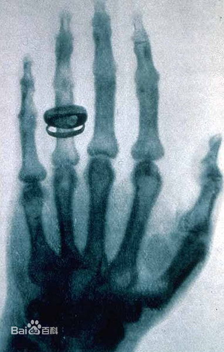

医学影像是指为了医疗或医学研究，对人体或人体某部分，
以非侵入方式取得内部组织影像的技术与处理过程。它包含以下两个相对独立的研究方向：
医学成像系统（medical imaging system）和医学图像处理（medical image processing）。
前者是指图像行成的过程，包括对成像机理、成像设备、成像系统分析等问题的研究；后者是指对
已经获得的图像作进一步的处理，其目的是或者是使原来不够清晰的图像复原，或者是为了突出图像
中的某些特征信息，或者是对图像做模式分类等等。
作为一门科学，医学影像属于生物影像，并包含影像诊断学、放射学、内视镜、医疗用热影像技术、医学
摄影和显微镜。另外，包括脑波图和脑磁造影等技术，虽然重点在于测量和记录，没有影像呈显，但因所产
生的数据俱有定位特性(即含有位置信息)，可被看作是另外一种形式的医学影像。
临床应用方面，又称为医学成像，或影像医学，有些医院会设有影像医学中心、影像医学部或影像医学科，
并配备相关的仪器设备，编制有专门的护理师、放射技师以及医师，负责仪器设备的操作、影像的解释与诊断(在台湾须由医师负
责)，这与放射科负责放射治疗有所不同。
在医学、医学工程、医学物理与生医资讯学方面，医学影像通常是指研究影像构成、撷取与储存的技术、以及
仪器设备的研究开发的科学。而研究如何判读、解释与诊断医学影像的是属于放射医学科，或其他医学领域(如神经系统学科、心血
管病学科...)的辅助科学。
发展历史
1895年德国物理学家威廉·康拉德·伦琴发现X 射线(一般称 X 光)以来，开启了医学影像崭新的一页，在此之前，医师想要了解病
患身体内部的情况时，除了直接剖开以外，就只能靠触诊，但这两种方法都有一定的风险。
1978年，应该放射学年会上，一位名叫G.N.Hounsfield的工程师公布了计算机断层摄影的结果。这是继X射线发现后，放射医学领
域里最重要的突破，也是20世纪科学技术的重大成就之一。Hounsfield与Cormack由于在放射医学中的划时代贡献而获得了1979年的诺贝尔生理与医学奖。
超声成像设备的发展得益于在第二次世界大战中雷达与声纳技术的发展。在20世纪50年代，简单的A型超声诊断仪开始用于临床。
到了70年代，能提供断面动态的B型仪器问世。80年代初问世的超声彩色血流图（color flow mapping,CFM）是目前临床上使用的高档超声诊断仪。
1945年美国学者首先发现了磁共振现象，从此产生了核磁共振谱学这门科学。70年代后期，对人体的磁共振成像获得成功。20
03年，诺贝尔胜利或医学奖授予了对磁共振成像研究做出了杰出贡献的美国科学家Paul C.Lauterbur和应该科学家Peter Mansfied。
影像技术
医学影像发展至今，除了X 射线以外，还有其他的成像技术，并发展出多种的影像技术应用。另外在生医资讯应用方面，为能所产生
的数位影像档案与影像数位化档案，可以交换与查阅，发展出医疗数位影像传输协定技术。常用的医学影像技术包括：
血管摄影 (Angiography)：或称动脉摄影、血管造影，是用x光照射人体内部，观察血管分布的情形，包括动脉、静脉或心房室。
心血管造影 (Cardiac angiography)：将造影剂通过心导管快速注入心腔或血管，使心脏和血管腔在X线照射下显影，同时有快速
摄片，电视摄影或磁带录像等方法，将心脏和血管腔的显影过程拍摄下来，从显影的结果可以看到含有造影剂的血液流动顺序，以及心脏血管充盈情况
，从而了解心脏和血管的生理和解剖的变化。是一种很有价值的诊断心脏血管病方法。
电脑断层扫描 (CT, Computerized tomography)，或称电子计算机断层扫描，根据所采用的射线不同可分为：X射线CT（X-CT）
、超声CT（UCT）以及γ射线CT（γ-CT)等。
乳房摄影术(Mammography)：是利用低剂量（约为 0.7毫西弗）的X光检查人类（主要是女性）的乳房，它能侦测各种乳房肿瘤、囊肿
等病灶，有助于早期发现乳癌。
正子发射断层扫描 (PET, Positron emission tomography)：是一种核医学成像技术，它为全身提供三维的和功能运作的图像
。是目前唯一的用解剖形态方式进行功能、代谢和受体显像的技术，具有无创伤性的特点，是目前临床上用以诊断和指导治疗肿瘤最佳手段之一。
核磁共振成像 (NMRI, Nuclear magnetic resonance imaging)：通过外加梯度磁场检测所发射出的电磁波，据此可以绘制人体
内部结构。
医学超音波检查 (Medical ultrasonography)：运用超声波的物理特性，通过电子工程技术对超声波发射、接收、转换及电子计算机
的快速分析、处理和显象，从而对人体软组织的物理特性、形态结构与功能状态作出判断的一种非创伤性检查方式，使肌肉和内脏器官——包括其大小、结构和病理学病灶——可视化。